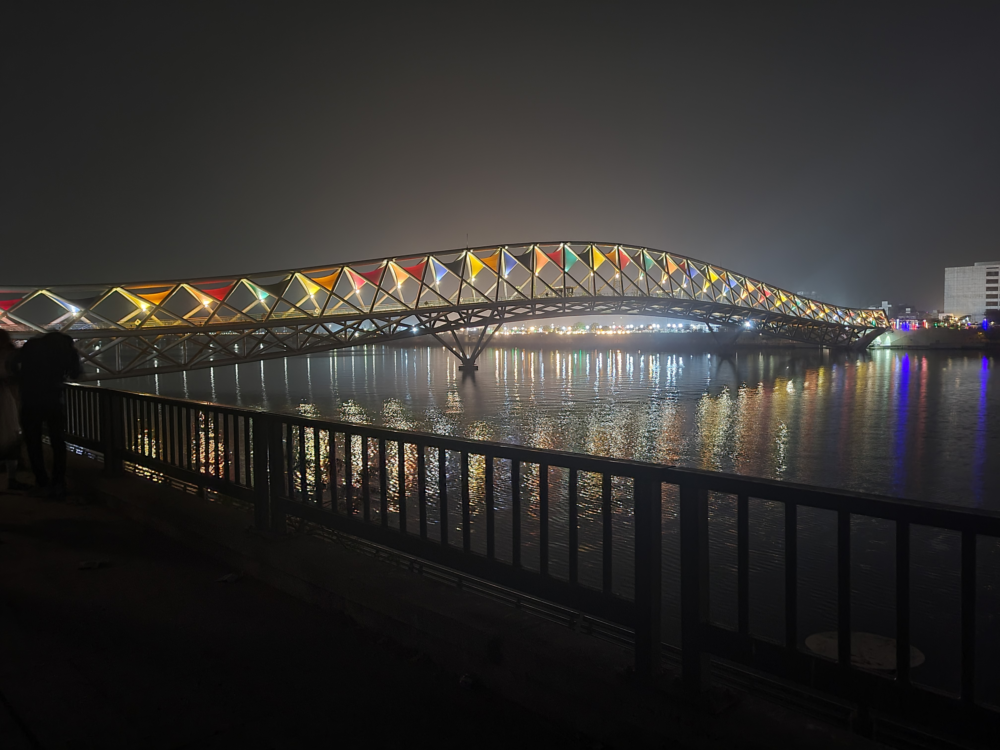
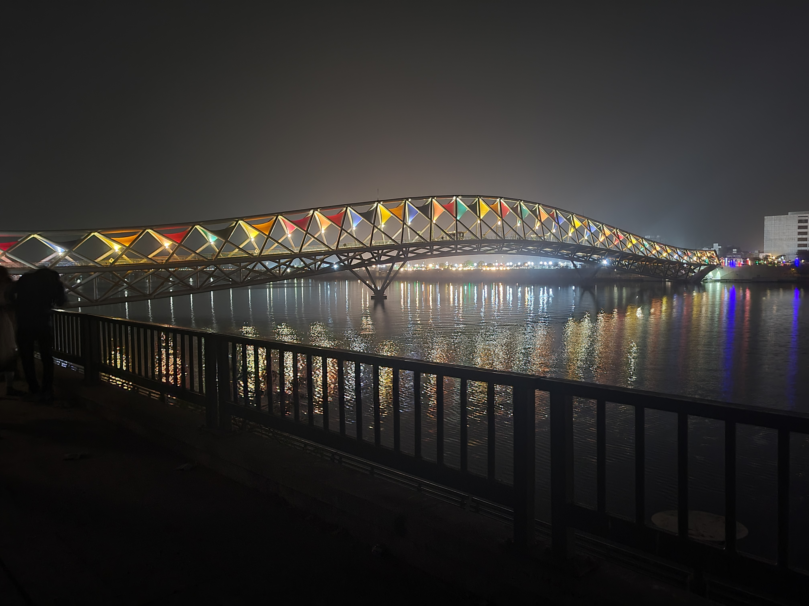
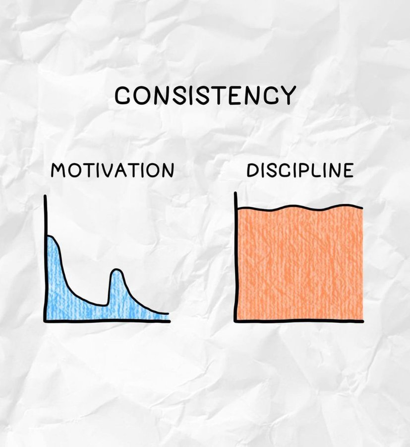
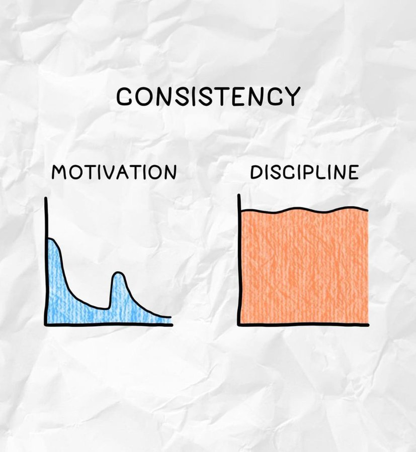

 

Small Introduciton (Dr. Dee)
I am working on the properties of strongly interacting matter under extreme conditions. In my PhD research work, we have studied chiral phase transition of quark matter (QM) matter at extremely high temperature at zero baryon chemical potential and non-zero chiral chemical potential. We have also worked on some transport properties like electrical conductivity, thermal conductivity and seebeck effects of quark matter (QM) at non-zero temperature and non-zero chemical potential in the presence of external magnetic fields. Recently, we have worked on the quark-hadron phase transition at zero temperature and extremely high density (few times nuclear saturation density, $\rho_0=0.16 per fermi^3$) in the context of neutron/hybrid stars. We have studied non-radial oscillation modes (g and f modes) in neutron/hybrid stars. We also find robust universal relations, relating the mass, radius and non-radial oscillation (f) mode frequency of the neutron stars. The robust universal relations are found by considering 30 million EOSs (DDB and DDB-Hyb). The DDB set is the set of relativistic mean field (RMF) equation of states (EOSs) where the couplings between baryons and mesons are density dependent and fixed by Bayesian analysis (B stands for Bayesian analysis) while the DDB-Hyb set is the set where low density part of EOS is the DDB EOS and high density (asymptotically high density) pQCD EOS, the intermediate region is interpolated by two monotropes.
Future Research Plan:
The non-radial oscillation modes in neutron stars are very much sensitive and directly related to the matter inside it. As if there is a quark-hadron phase transition the frequency of the mode enhances. So there might be a possibility of a correlation between the non-radial oscillation modes to the neutron star matter properties, like symmetric matter properties, asymmetric matter properties, mass, radius, tidal deformiability of the neutron star etc. I would like to study the orrelations of non-radial oscillation frequencies with neutron stars matter properties and mass, radius, tidal deformiability of neutron stars. Topics of research (in brief):-
-
1)
2)
Contact Us:
YPM Organizing Committee,
Theory Physics Division, PRL, Ahmedabad 380009
E-Mail:
tphcs.ypm@ gmail.com
Science Quotes:
Life is like riding a bicycle. To keep your balance, you must keep moving.
Albert Einstein
Important Dates:
| Registration Begins | 20 Feb 2020 |
| Registration Ends | 01 Mar 2020 |
| Abstract Submission Last date | 12 Mar 2020 |
| Meeting Date | 16-19 Mar 2020 |